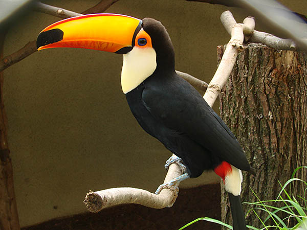
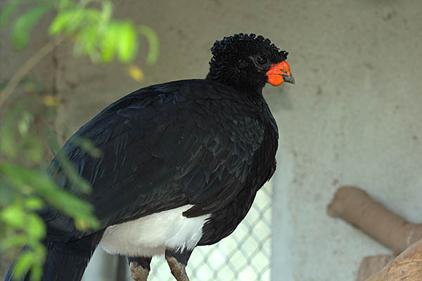
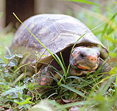
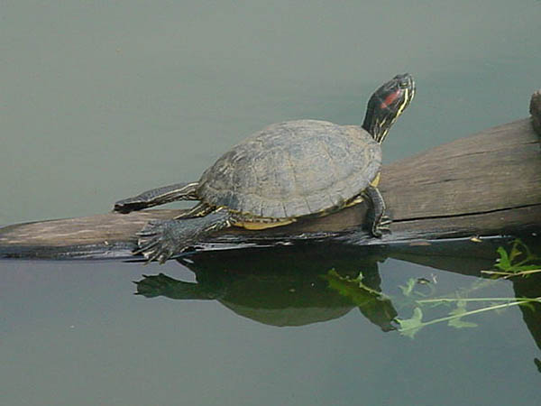
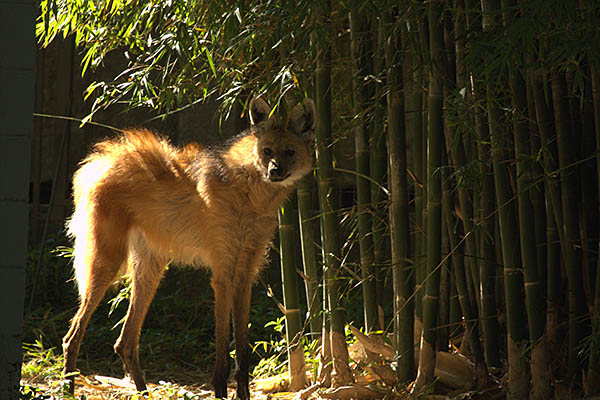
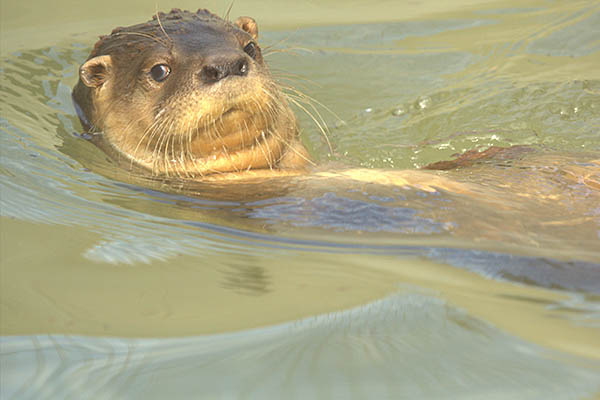

Animais
Sobre
Curisidades
Animais
AVES
PRIMATAS
FELÍDEOS
RÉPTEIS
MAMÍFEROS
Para conhecer mais sobre os animais, basta clicar sobre a foto. (Fontes:Wikipedia).
AVES
Urubu rei
Arara Canindé
SERIEMA
GRALHA DO CAMPO
JANDAIA MARACANÃ

TUCANO TOCO
TUCANO DE PEITO BRANCO
TUCANO DE BICO VERDE
TURACO DE FACE BRANCA
URUMUTUM
TIRIBA DE TESTA VERMELHA
MARACANÃ DO BURITI
TIRIBA DE TESTA VERMELHA
MARACANÃ DO BURITI
MARACANÃ NOBRE
PERIQUITO ENCTRO AMARELO
GRALHA PICAÇA
JACUGUAÇU
JANDAIA MINEIRA
PERIQUITO VERDE
MARIANINHA CABEÇA AMARELA
MAITACA CABEÇA AZUL
PAPAGAIO VERDADEIRO
ANACÃ
GRAÚNA
PICA-PAU BRANCO
MOCHO ORELHUDO
URUBU COMUM
GAVIÃO PERNILONGO
GAVIÃO CARRAPATEIRO
GAVIÃO CARIJÓ
IRERÊ
GANSO AFRICANO
CISNE NEGRO
EMA
Mutum de penacho
Arara vermelha
Papagaio peito roxo

Mutum do sudeste
PRIMATAS
Mico-leão-de-cara-dourada
Sagui-da-serra-escuro
Bugio-ruivo
SAGUI DE TUFO BRANCO
SAUÁ
FELÍDEOS
Gato do mato pequeno
Onça pintada
Onça parda
LEÃO
GATO MOURISCO
RÉPTEIS

JABUTI PIRANGA
TEIÚ ARGENTINO
IGUANA
CÁGADO CABEÇUDO
TARTARUGA MORDEDORA
TARTARUGA DO RIO COOTER
JIBOIA
JACARÉ DO PAPO AMARELO
CÁGADO DE BARBICHA

TARTARUGA ORELHA VERMELHA
MAMÍFEROS

Lobo guará

Lontra
Cateto
Anta
VEADO CATINGUEIRO
FURÃO
QUATI
CAPIVARA